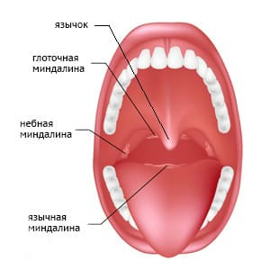
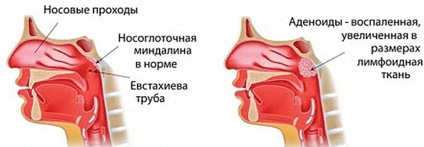
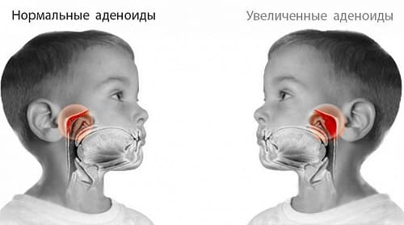

АДЕНОИДЫ
Совсем недавно, рассказывая про ангину, мы объясняли значение таких понятий, как лимфоидная ткань и миндалины. Без понимания значения этих слов, в свою очередь, невозможно ответить на вопрос: «Что такое аденоиды?» Так что убедительно прошу вернуться на несколько страниц назад и перечитать.
Небные миндалины – не единственные лимфоидные образование глотки. Имеется еще одна миндалина, которая называется глоточной. Увидеть ее при осмотре полости рта невозможно, но представить, где она находится, несложно. Опять-таки, заглянув в рот, мы можем увидеть заднюю стенку глотки, поднимаясь по ней вверх, легко достигнуть свода носоглотки. Именно там расположена глоточная миндалина.
Глоточная миндалина, и это уже понятно, тоже состоит из лимфоидной ткани. Глоточная миндалина может увеличиваться в размерах, и это состояние носит название «гипертрофия глоточной миндалины».

Увеличение размеров глоточной миндалины называют аденоидными разращениями, или просто аденоидами. Зная основы медицинской терминологии, несложно заключить, что воспаление глоточной миндалины врачи именуют аденоидитом.
Болезни небных миндалин достаточно очевидны. Воспалительные процессы (ангины, острые и хронические тонзиллиты) легко обнаруживаются уже при осмотре полости рта. С глоточной миндалиной ситуация иная. Ведь посмотреть на нее непросто – это может сделать лишь врач (отоларинголог) при помощи специального зеркала: маленькое круглое зеркальце на длинной ручке вводится глубоко в полость рта, до задней стенки глотки, и в зеркале можно увидеть глоточную миндалину. Манипуляция эта проста только теоретически, поскольку «засовывание» зеркальца очень часто вызывает «нехорошие» реакции в виде позывов на рвоту и т. п.
В то же время конкретный диагноз – «аденоиды» – можно поставить и без неприятных осмотров. Симптомы, сопровождающие появление аденоидов, весьма характерны и обусловлены, прежде всего, тем местом, где расположена глоточная миндалина. Именно там, в области свода носоглотки, находятся, во-первых, отверстия (устья) слуховых труб, соединяющих носоглотку с полостью среднего уха, и, во-вторых, там заканчиваются носовые ходы.
Увеличение размеров глоточной миндалины, с учетом описанных анатомических особенностей, формирует два главных симптома, свидетельствующих о наличии аденоидов, – нарушения носового дыхания и нарушения слуха.
Несложно предположить, что выраженность этих симптомов будет во многом определяться степенью увеличения глоточной миндалины (отоларингологи различают аденоиды I, II, и III степени).

Главным, наиболее существенным и наиболее опасным следствием аденоидов является постоянное нарушение носового дыхания. Ощутимое препятствие для прохождения воздушной струи приводит к дыханию через рот, а следовательно, к тому, что нос не может выполнять свои функции, которые, в свою очередь, очень важны. Следствие очевидно – в дыхательные пути попадает необработанный воздух – не очищенный, не согретый и не увлажненный. А это многократно увеличивает вероятность воспалительных процессов в глотке, в гортани, в трахее, в бронхах, в легких (ангины, ларингиты, трахеиты, бронхиты, пневмонии).
Постоянно затрудненное носовое дыхание отражается и на работе самого носа – возникают застойные явления, отек слизистой оболочки носовых ходов, непроходящие насморки, нередко возникают гаймориты, изменяется голос – становится гнусавым. Нарушение проходимости слуховых труб, в свою очередь, приводит к ухудшению слуха, к частым отитам.
Дети спят с открытым ртом, храпят, жалуются на головные боли, часто болеют респираторными вирусными инфекциями.
Внешний вид ребенка с аденоидами удручающий – постоянно открытый рот, густые сопли, раздражение под носом, платочки во всех карманах… Врачи даже придумали специальный термин – «аденоидное лицо».
Итак, аденоиды – серьезная неприятность, причем неприятность главным образом детская: своего максимального размера глоточная миндалина достигает в возрасте от 4 до 7 лет. В периоде полового созревания лимфоидная ткань значительно уменьшается в размерах, но к этому времени уже можно «заработать» очень большое количество серьезных болячек – и со стороны ушей, и со стороны носа, и со стороны легких. Таким образом, выжидательная тактика – дескать, потерпим лет до 14, а там глядишь, и рассосется – однозначно неверна. Действовать необходимо, особенно с учетом того факта, что исчезновение или уменьшение аденоидов в подростковом возрасте – процесс теоретический, а на практике бывают случаи, когда и в 40 лет приходится лечить аденоиды.

Какие факторы способствуют появлению аденоидов?
• Наследственность – по крайней мере, если родители страдали аденоидами, ребенок в той или иной степени тоже с этой проблемой столкнется.
• Воспалительные заболевания носа, горла, глотки – и респираторные вирусные инфекции, и корь, и коклюш, и скарлатина, и ангины и т. д.
• Нарушения питания – особенно перекармливание и избыток сладкого.
• Склонность к аллергическим реакциям, врожденная и приобретенная недостаточность иммунитета.
• Нарушения оптимальных свойств воздуха, которым дышит ребенок – очень тепло, очень сухо, много пыли, примесь вредных веществ (экологическая обстановка, избыток бытовой химии).
Таким образом, действия родителей, направленные на профилактику аденоидов, сводятся к коррекции, а еще лучше, к изначальной организации образа жизни, способствующего нормальному функционированию системы иммунитета – кормление по аппетиту, физические нагрузки, закаливание, ограничение контактов с пылью и бытовой химией, оптимизация физических свойств вдыхаемого воздуха.
Но если аденоиды есть, лечить надо – уж слишком опасны и непредсказуемы последствия, если не вмешиваться. В то же время главное – коррекция образа жизни и только потом лечебные мероприятия.
Все способы лечения аденоидов делятся на консервативные (их много) и оперативный (он один). Консервативные методы часто помогают, а частота положительных эффектов прямо связана со степенью аденоидов, что, впрочем, вполне очевидно: чем меньше глоточная миндалина, тем легче получить эффект без помощи операции.
Выбор консервативных методов велик. Это и общеукрепляющие средства (витамины, иммуностимуляторы), и промывания носа специальными растворами, и закапывания самых разнообразных средств, обладающих противовоспалительными, антиаллергическими и антимикробными свойствами.
Если консервативные методы не помогают – на повестку дня встает вопрос об операции. Операция удаления аденоидов носит название «аденотомия». Кстати, и это принципиально важно, показания к аденотомии определяются не размерами аденоидных разращений, а конкретными симптомами. В конце концов, в силу специфических анатомических особенностей конкретного ребенка, бывает и так, что аденоиды III степени лишь умеренно препятствуют носовому дыханию, а аденоиды I степени приводят к значительному снижению слуха.
Что необходимо знать по поводу аденотомии.
Суть операции – удаление увеличенной глоточной миндалины.
Операция возможна и под местной, и под общей анестезией.
Операция по продолжительности одна из самых коротких – одна-две минуты, а сам процесс «отрезания» – несколько секунд. Специальный кольцевидный нож (аденотом) вводится в область свода носоглотки, прижимается к нему и в этот момент аденоидная ткань входит в кольцо аденотома. Одно движение руки – и аденоиды удалены.

Несложность операции не является свидетельством безопасности операции. Возможны и осложнения в связи с наркозом, и кровотечения, и повреждения неба. Но все это бывает нечасто.
Аденотомия не является неотложной операцией. К ней желательно подготовиться, пройти нормальное обследование и т. д. Нежелательна операция во время эпидемий гриппа, после перенесенных острых инфекционных болезней.
Восстановительный период после операции протекает быстро, ну разве что один-два дня желательно не очень «скакать» и не есть твердого и горячего.
Обращаю внимание на тот факт, что, вне зависимости от квалификации хирурга, удалить глоточную миндалину полностью невозможно – хоть что-то да останется. И всегда имеется вероятность того, что аденоиды появятся (вырастут) вновь.
Повторное появление аденоидов является поводом для серьезных родительских раздумий. И вовсе не о том, что «попался» нехороший врач. А о том, что все врачи, вместе взятые, не помогут, если ребенка окружают пыль, сухой и теплый воздух, если дитя кормят с уговорами, если телевизор важнее прогулок, если нет физических нагрузок, если… Если маме и папе проще отвести ребенка к отоларингологу, чем расстаться с любимым ковром, организовать закаливание, занятия спортом, достаточное пребывание на свежем воздухе.
Е.О.Комаровский. "Здоровье ребенка"